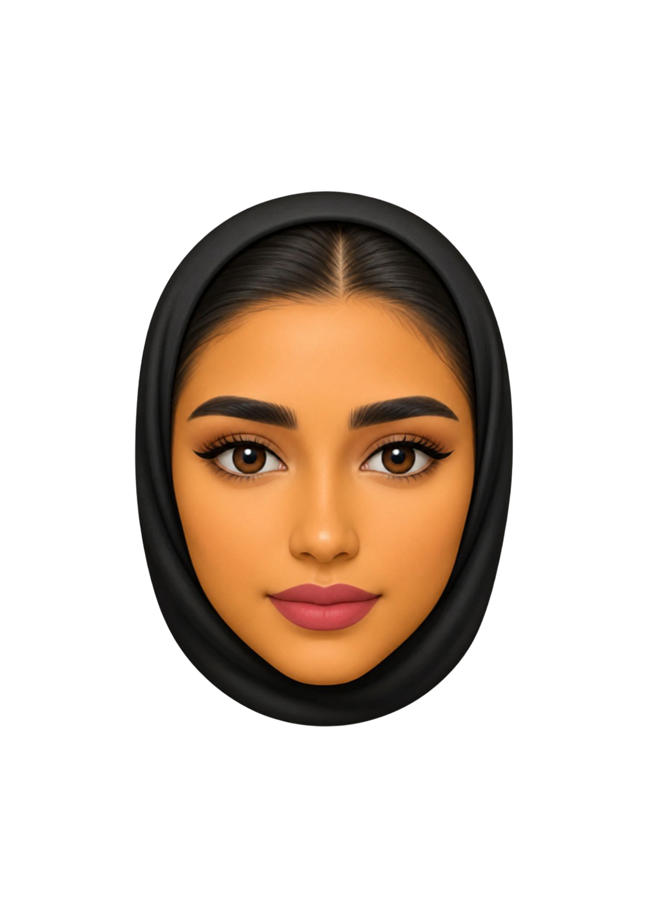

Computer Science Junior
Building colorful digital experiences with logic, curiosity, and human-centered AI.
I am Joman Ali Alsharbini, a student at Effat University exploring software engineering, data-driven systems, and thoughtful product design.

CS student crafting modern digital experiences
Current Focus
Creating systems that feel intelligent and useful.
- AI-assisted software ideas
- Frontend interfaces with strong UX
- Solid software engineering foundations
About Me
A curious builder with a growing toolkit.
I enjoy turning ideas into clean, usable experiences. My interests sit at the intersection of problem-solving, creative design, and emerging AI systems.
Whether I am exploring algorithms, building interfaces, or structuring project workflows, I care about making technology clear, helpful, and engaging.
What I bring
Analytical Thinking
Team Collaboration
Fast Learner
Creative Problem Solving
User-Focused Design
Structured Development
Projects
Selected work and concept builds.
AI Project
Study Assistant Chatbot
A conversational helper designed to organize course materials, answer common questions, and support student revision.
Python
NLP
Prompt Design
Web Experience
Interactive Campus Portal
A concept portal for students to browse announcements, course updates, and club events in one polished dashboard.
HTML
CSS
JavaScript
Data Project
Performance Insights Dashboard
A dashboard prototype that visualizes academic trends and highlights useful patterns for planning and improvement.
Data Analysis
Visualization
Research
Frontend Build
Creative Portfolio Prototype
A vibrant personal brand concept focused on motion, storytelling, and memorable interaction patterns.
UI Design
Responsive Layout
Animation
Skills
Core strengths across code, design, and teamwork.
Programming
Python
85%
JavaScript
78%
Java
72%
Technical Areas
Algorithms
OOP
Data Structures
Web Development
Software Engineering
UI/UX Thinking
AI Fundamentals
Databases
Collaboration Skills
Communication
Presentation
Documentation
Team Projects
Critical Thinking
Adaptability
Courses
Academic learning that supports my portfolio.
Data Structures and Algorithms
Problem-solving patterns, runtime analysis, and efficient design strategies.
Software Engineering
Project planning, documentation, collaboration, testing, and maintainable systems.
Database Systems
Schema design, SQL thinking, data organization, and system reliability basics.
Introduction to Artificial Intelligence
Core concepts in intelligent systems, reasoning, and practical AI applications.
Web Development
Responsive interfaces, front-end structure, styling systems, and interaction design.
Human Computer Interaction
Designing products that are intuitive, accessible, and centered on user needs.
Journey
How my learning path is taking shape.
Strengthened programming foundations
Built confidence in structured problem solving, object-oriented programming, and teamwork.
Explored software and interface design
Started combining technical work with more polished user experiences and project thinking.
Expanding into AI and portfolio projects
Focusing on practical builds that connect creativity, engineering, and emerging AI tools.